ASSOCIAÇÃO BENEFICENTE
EU POSSO AJUDAR

EVENTOS CULTURAIS
A associação pode oferecer diversos eventos culturais para integrar e apoiar as pessoas com mais necessidades. Entre as opções estão oficinas de arte, onde os participantes expressam criatividade por meio de pintura, música e teatro; apresentações musicais e corais, promovendo inclusão e interação; sessões de cinema e contação de histórias, estimulando a imaginação; feiras culturais e exposições de trabalhos artísticos, valorizando a produção comunitária. Esses eventos promovem a autoestima, o convívio social e o bem-estar emocional.
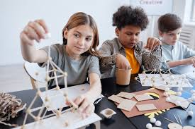
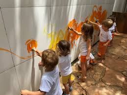
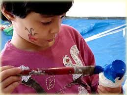
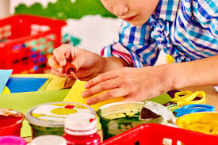
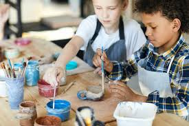
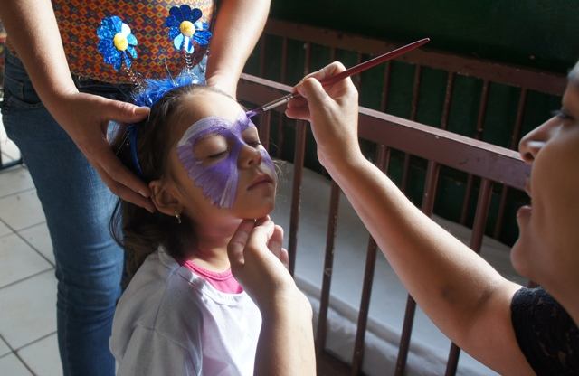
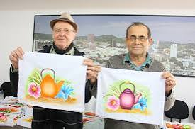
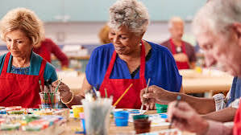
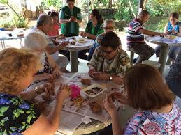
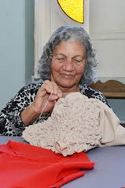
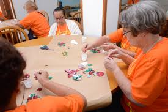
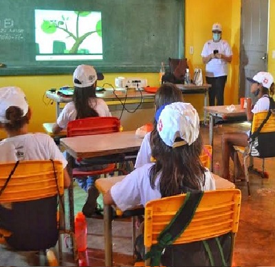
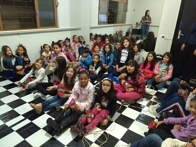